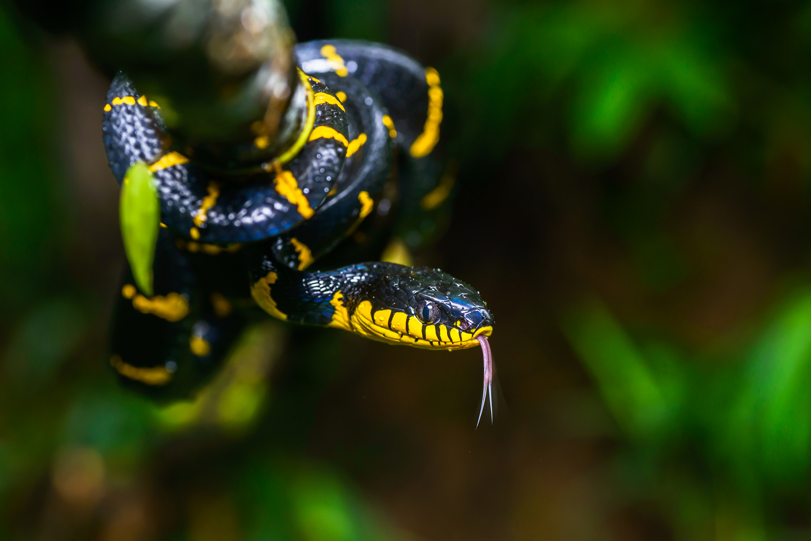
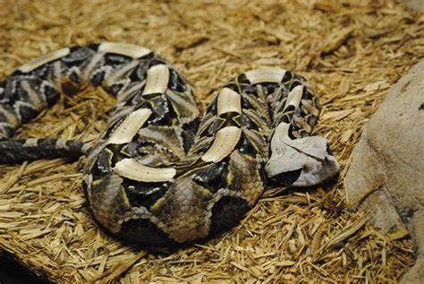

Desert Region Snakes
Desert snakes are a diverse group of reptiles that have adapted to survive in arid and desert locations. Their coloration and patterns often blend seamlessly with the desert landscape, allowing them to remain concealed from both predators and potential prey. These snakes are well-equipped to withstand scorching temperatures by altering their activity patterns, often becoming nocturnal or crepuscular to avoid the intense heat of the day.
To survive in desert environments, desert snakes must:
- Adapt to the temperature
- Adjust their prey options
- Conceal themselves by means of camouflage and burrowing
- Making the most of desert humidity and lack of rain
Examples of desert region snakes:
Non-venomous desert snakes:
| Coachwhip (Masticophis flagellum) | Desert Kingsnake (Lampropeltis splendida) | Arabian Sand Boa (Erycinae) |
|---|---|---|
Coachwhip, wikipedia.org, |
Desert Kingsnake, dreamstime.com, |
Arabian Sand Boa, pinterest.com, |
Venomous desert snakes:
| Black Mamba (Dendroaspis polylepis) | Egyptian Cobra (Naja haje) | Indian Saw Scaled Viper (Echis carinatus) |
|---|---|---|
Nick Evans, Black Mamba, bioweb.ie, |
Sarus Crane, pinterest.com, |

Shantanu Kuveskar, Saw Scaled Viper, ipfactly.com, |
Coastal Region Snakes
Coastal region snakes are reptiles that inhabit the areas along coastlines and coastal habitats. Coastal region snakes encompass a wide array of species that thrive in the varied ecosystems found along coastlines worldwide. These snakes have evolved to navigate the complex interactions between land and water, making their homes in habitats such as coastal dunes, marshes, mangroves, and tidal zones.
To survive in coastal environments, coastal snakes must:
- Camouflage to blend in with their coastal surroundings
- Have saltwater tolerance
- Have swimming abilities
- Have climbing abilities to climb trees and branches to access prey or escape from predators
Examples of coastal region snakes:
Non-venomous coastal snakes:
| Corn Snake (Pantherophis guttatus) | Brown Water Snake (Nerodia taxispilota) | Mangrove Snake (Boiga dendrophila) |
|---|---|---|

Nathan Shepard, Corn Snake, thesprucepets.com, |
Brown Water Snake, floridamuseum.com, |
 Mangrove Snake, realmonstrosities.com, |
Venomous coastal snakes:
| Gaboon Viper (Bitis gabonica) | Russell's Viper (Daboia russelii) | Fer-De-Lance (Bothrops asper) |
|---|---|---|
 Gaboon Viper, ppotography-blog.blogspot.com, |
Russells Viper, foodnhealth.org, |
Fer-De-Lance, critterscience.com, |
Sea Snakes
Sea snakes, also known as coral reef snakes, are elapid snakes that inhabit marine environments for most or all of their lives. These are snakes that have adapted to life in the ocean. Sea snakes remain one of the most unknown creatures to science. Venom is an essential adaptation for sea snakes to capture their prey. Almost all sea snakes possess venom, making them one of the most venomous groups of snakes in the world.
To survive in the sea, snakes must:
- Have salt glands to eliminate excess salt that they accumulate from ingesting seawater
- Streamlined body shape, including: flattened tails and laterally compressed bodies
- Possess swimming abilities
Examples of sea snakes:
| Yellow-Bellied Sea Snake (Hydrophis platurus) | Yellow-Lipped Sea Krait (Laticauda colubrina) |
|---|---|
Yellow Bellied Sea Snake, australiangeographic.com, |
Yellow-Lipped Sea Krait, daerr.com, |
Go back to top


{kind=link}